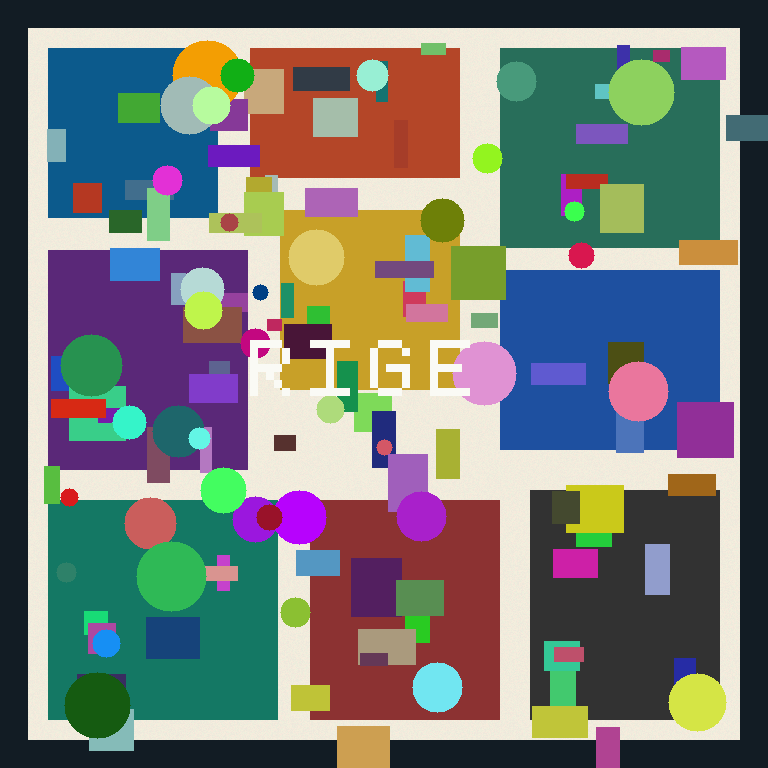

Печатный image-target
Распечатайте это изображение (желательно не меньше 15–20 см) и закрепите его на физической буровой или рядом с ней. Stage 1 использует его как одноразовый визуальный триггер.

Распечатайте это изображение (желательно не меньше 15–20 см) и закрепите его на физической буровой или рядом с ней. Stage 1 использует его как одноразовый визуальный триггер.
